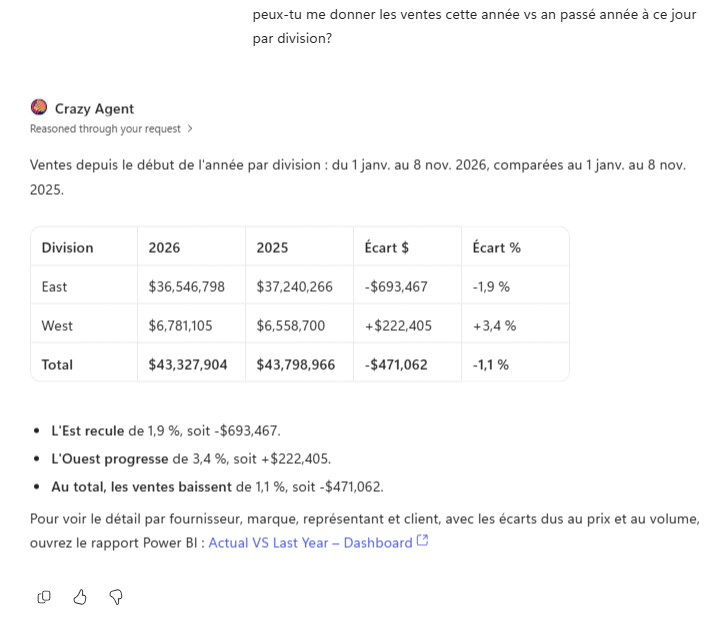

Configurer un agent Copilot Studio sur Power BI
Un agent Copilot Studio branché sur un modèle sémantique Power BI peut répondre en quelques secondes à « Quelles sont nos ventes du mois dernier par division, vs l'an dernier ? ». Mais la qualité de sa réponse dépend de deux choses : le modèle qu'on lui donne et la façon dont on le configure.
J'ai récemment monté un agent de ce type pour un distributeur. Il interroge le modèle en DAX, respecte la sécurité par rôle (RLS) et propose le bon rapport Power BI à la fin de chaque réponse. Voici, paramètre par paramètre, ce que j'ai configuré et pourquoi.

Étape 0 : un modèle sémantique pensé pour l'IA
Un agent n'est jamais meilleur que le modèle qu'il interroge. Plutôt que de brancher le modèle principal, j'ai créé une copie dédiée à l'IA, plus simple et mieux documentée.
Des descriptions partout. Chaque table, colonne et mesure visible a une description en langage clair : ce qu'elle calcule, son signe (les coûts sont négatifs) et quand l'utiliser.
Un dictionnaire interrogeable. Une table calculée reprend automatiquement les descriptions du modèle (fonctions INFO.VIEW). Quand l'agent hésite, il cherche dans ce dictionnaire avant d'écrire sa requête, au lieu d'inventer un nom de mesure.
Un sélecteur de période. Les mesures TY, LY, Var $ et Var % suivent un scénario choisi (Year to Date, Month Last Completed, Rolling 12 Months…). L'agent n'a pas à écrire de logique de dates : il choisit un scénario par son nom.
Des colonnes techniques masquées. Les clés et les colonnes numériques brutes sont cachées, pour que l'agent passe par les mesures et ne fasse jamais de SUM sur une table de faits.
Une RLS qui ne ment pas. Les vendeurs ne voient pas les coûts. Sans précaution, la marge brute leur aurait affiché les ventes seules. La mesure vérifie donc si des lignes de coût sont visibles et retourne vide sinon. L'agent sait alors dire « le coût n'est pas disponible avec vos accès ».
La RLS reste appliquée quand l'agent interroge le modèle : chaque utilisateur ne voit que ses données, sans rien ajouter dans Copilot Studio.
Les paramètres de l'agent, un par un
Modèle
C'est le modèle de langage qui raisonne et écrit le DAX. J'ai choisi le plus performant disponible. Générer une requête DAX correcte, avec les bons noms de mesures et un filtre de période, demande plus de rigueur qu'un simple résumé de texte. Un modèle plus léger fait plus d'erreurs de syntaxe.
Instructions
C'est le cœur de l'agent, et la limite est de 8 000 caractères. Chaque phrase doit donc mériter sa place. Les miennes couvrent six sujets :
Le rôle. « Tu es l'analyste des ventes. Tu ne réponds qu'avec des chiffres issus d'une requête. N'invente jamais un chiffre. »
La méthode. Identifier la mesure, la période, le regroupement et les filtres. En cas de doute, chercher dans le dictionnaire. Écrire une seule requête, la tester, puis seulement en envoyer d'autres.
Le format exact de l'appel à l'outil. La moitié des erreurs venaient d'un JSON mal formé (une accolade de trop), pas du DAX. Je décris le format attendu et le message d'erreur qui le trahit.
Les périodes. La liste exacte des scénarios, la traduction des expressions courantes (« le mois dernier » = Month Last Completed) et la période par défaut.
Les règles métier. Les coûts sont négatifs, ce qu'est un client, ce que veut dire « Est » et « Ouest », toujours vérifier les valeurs d'une colonne avant de filtrer, maximum 25 lignes.
Le style de réponse. Le chiffre d'abord, les dates exactes de chaque période (« du 1er au 31 octobre 2026 vs du 1er au 31 octobre 2025 », jamais seulement « YTD »), un tableau court au-delà de trois lignes et une seule suggestion de suite.
J'y ajoute trois ou quatre requêtes DAX modèles. Un exemple concret vaut mieux que trois paragraphes d'explication.
Canaux
Là où les utilisateurs parlent à l'agent. J'ai activé Teams + Microsoft 365 : les vendeurs posent leurs questions dans Teams, sans ouvrir Power BI. L'agent répond avec l'identité de l'utilisateur, donc la RLS s'applique.
Outils
Les actions que l'agent peut exécuter.
La requête sur le modèle sémantique. C'est l'outil principal : il exécute une requête DAX (EVALUATE …) sur le modèle publié et retourne le résultat. Je l'ai nommé clairement (« Query sales model ») pour que l'agent sache quand l'utiliser.
Work IQ. Il donne accès au contexte Microsoft 365 de l'utilisateur (courriels, fichiers, rencontres). Utile pour préparer une visite client, mais les instructions interdisent de l'utiliser pour des chiffres d'affaires : seuls les chiffres du modèle comptent.
Knowledge
Les sources de référence que l'agent consulte pour du contexte, pas pour des chiffres.
Le site web de l'entreprise, pour décrire les produits et les marques.
Un fichier Excel du catalogue des rapports Power BI : chaque page de chaque rapport, sa description et son lien dans l'app. Les instructions demandent à l'agent de suggérer la bonne page à la fin d'une réponse, en prenant le lien dans ce fichier seulement. L'utilisateur passe ainsi de la réponse rapide à l'analyse complète en un clic. Retirez du fichier les pages masquées et les rapports techniques, pour que l'agent ne les propose jamais.
Skills
Les skills sont des instructions spécialisées que l'agent charge seulement quand la question s'y prête. Elles contournent la limite des 8 000 caractères : les instructions principales restent générales, et chaque cas d'usage a son propre fichier, avec un nom et une description qui disent quand l'utiliser.
Exemples : opportunités de vente par client, préparation d'une visite, revue d'un fournisseur, stock dormant, réapprovisionnement, explication d'un écart (prix, volume, mix), export Excel, graphiques et présentation. Chaque skill a des valeurs par défaut explicites (180 jours sans vente, 1 000 $ minimum…) que les utilisateurs peuvent changer dans leur question.
Quand une partie des données est en cours de validation, je la désactive dans la skill plutôt que de laisser l'agent répondre avec des chiffres douteux.
Agents connectés
Ce paramètre permet de déléguer une partie du travail à d'autres agents (par exemple, un agent RH ou un agent finance). Je ne l'utilise pas encore. Un seul agent bien instruit suffit pour commencer, et chaque agent ajouté est un endroit de plus où une réponse peut dérailler.
Tester, évaluer, publier
Les onglets du haut de Copilot Studio suivent le cycle de vie de l'agent.
Preview. Pour tester une question pendant qu'on ajuste les instructions. Je vérifie chaque fois la requête DAX générée, pas seulement la réponse : un chiffre plausible peut venir d'une mauvaise mesure.
Evaluate. Pour rejouer une liste de questions types après chaque changement. Je compare les réponses avec les chiffres d'un rapport Power BI. C'est la seule façon de savoir si une modification des instructions a brisé autre chose.
Publish. Pour rendre la nouvelle version disponible dans les canaux. Tant qu'on ne publie pas, les utilisateurs gardent l'ancienne.
Monitor. Pour voir les vraies questions posées et les réponses en échec. C'est la meilleure source d'idées pour la prochaine skill.
Je teste aussi avec un compte de chaque rôle de sécurité. Un vendeur doit voir ses ventes, mais aucune marge.
Ce que j'en retiens
Le modèle sémantique fait 80 % du travail. Des descriptions claires et un dictionnaire valent plus que n'importe quelle instruction.
Chaque caractère compte. Avec 8 000 caractères, on garde dans les instructions ce qui sert à chaque question et on déplace le reste dans des skills.
Les dates exactes bâtissent la confiance. Un utilisateur qui voit « du 1er au 31 octobre 2026 vs 2025 » peut vérifier. « YTD » seul laisse un doute.
L'agent ne remplace pas les rapports, il y mène. La réponse rapide dans Teams, puis le lien vers la page Power BI pour creuser.
Dire « je ne sais pas » est une fonctionnalité. Un agent qui avoue qu'une donnée n'est pas disponible vaut mieux qu'un agent qui improvise.
Et vous, avez-vous déjà branché un agent sur vos modèles Power BI ? Quel paramètre vous a donné le plus de fil à retordre ?